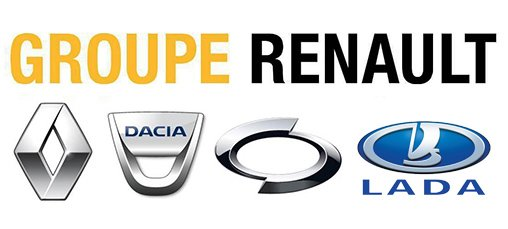

Renault (pronunciación en francés: /rə'no/) es un fabricante francés de automóviles, vehículos comerciales y de carreras.
Es la marca fundacional del Groupe Renault. Ha sido reconocido con numerosos premios por sus vehículos: una vez Coche del Año de los Estados Unidos Motor Trend,
seis veces Coche del Año en Europa, nueve veces Coche del Año en España, tres veces Coche del Año Autobest en Rusia,
Polonia, Turquía o dos veces Coche del Año en Irlanda y en Dinamarca.
Ha competido, en innumerables ocasiones como constructor en la Fórmula 1 desde 1977 a 1985, período en que desarrolló e introdujo los motores equipados
con turbocompresor en dicha disciplina y, nuevamente, desde 2002 hasta la actualidad. Durante los años en que Renault no compitió como constructor, se ha dedicado a suministrar motores a varios equipos
consiguiendo notables éxitos con Benetton y Williams Racing, logrando el título como proveedor entre 1992 y 1997. En 2005 y 2006 ganó el mundial de constructores.
Marcas que pertenecen a este grupo
A este grupo pertenecen:
- Renault
- Dacia
- Alpine
- Lada
- Samsung

Volver 5 curiosidades y datos sorprendentes de Stellantis
1. Raíces nazis ...
2. Ford no quiso comprarla ni gratis tras la guerra ...
3. El Escarabajo, el que más tiempo ha estado en producción ...
4. La inauguración de su fábrica congregó a más de 70.000 personas ...
5. El viento, fuente de inspiración para muchos nombres ...